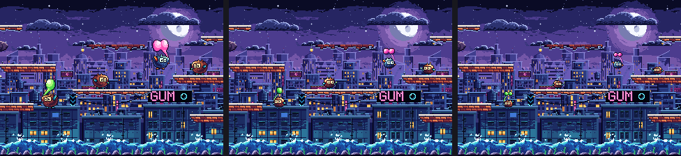
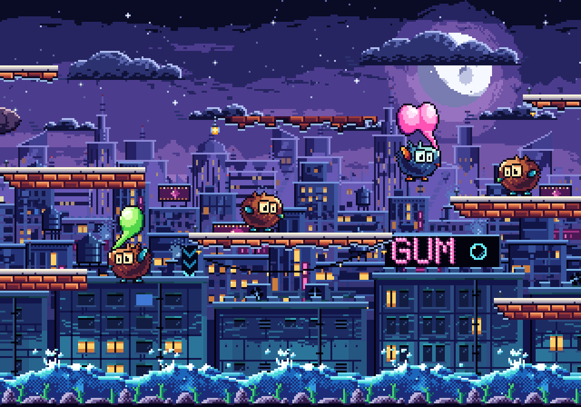
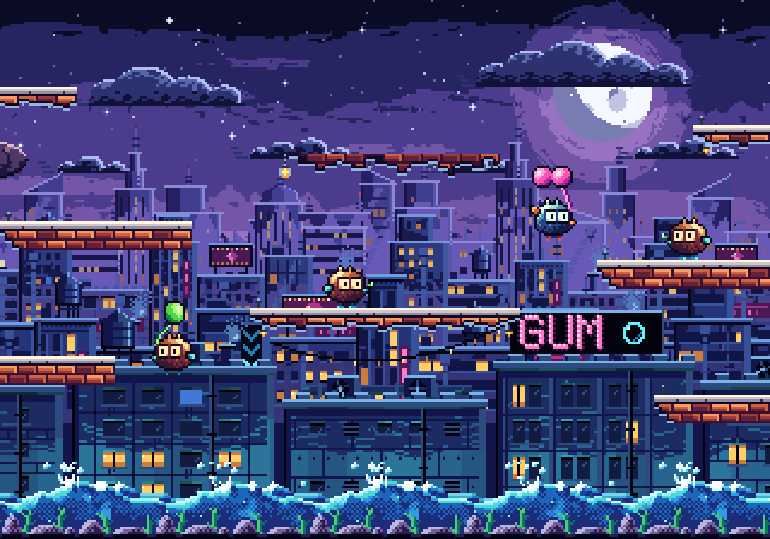
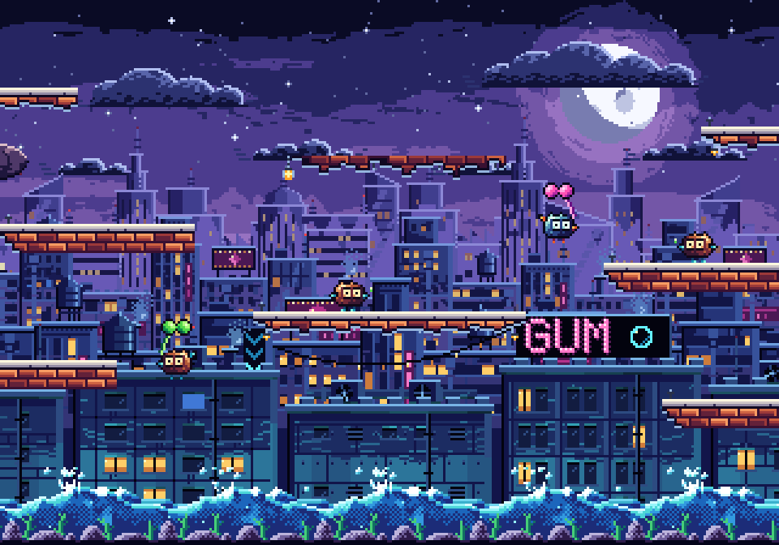
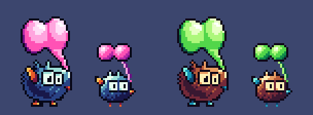
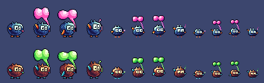
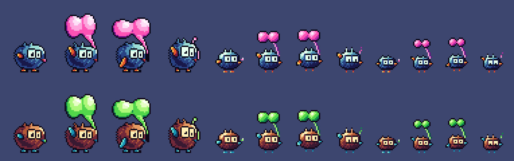
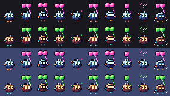
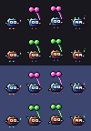
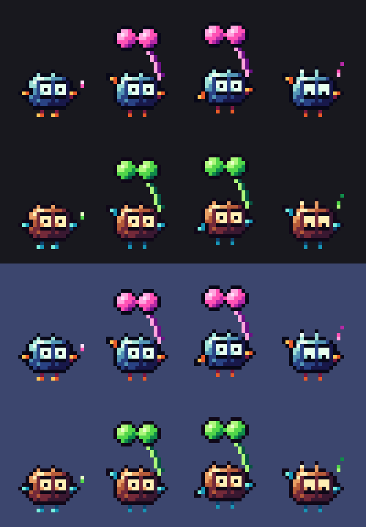

Draft for one decision: smaller Sootlings or a bigger world. Nothing in the game was changed. Everything marked 1x is the size the cabinet shows; judge there first.
Same camera (x 32), same islands (stage table now), same four fliers at the same spots: player flapping between the right islands, a rival standing on the middle island, a rival on one gum low over the water, a rival standing on the right island. Left: now 32 x 48. Middle: 24 x 32. Right: 20 x 28.




Left pair is the player, right pair the rival. The current clip has 8 drawn frames; the small one here has only 3 key frames (up, glide, down), so it is choppier than a finished clip would be.

Idle, flap up, flap down, fall without gum. First now, then 24 x 32, then 20 x 28.


Left to right: idle, flap up, flap down, glide, fall without gum, walk 1, walk 2, one-gum float, pop reaction, landing. Shown on a dark ground and on a night-sky tone. Redrawn by hand on the pixel grid with the 15 colours of the current sheet; not a scaled copy.

Idle, flap up, flap down, fall without gum. Eyes are 3 x 3 with a one-pixel pupil, so the Sootling can no longer look in a direction; the gum lobes are 7 px.


Full text in numbers.txt. Short version:
size frame fur body body width / screen width frame height / world height frames stacked in the 180 px world now 32x48 22 x 19 6.9 % 26.7 % 3.75 24x32 24x32 14 x 14 4.4 % 17.8 % 5.62 20x28 20x28 11 x 9 3.4 % 15.6 % 6.43 Tiles for 63 frames: now 378 slots (294 unique measured); 24x32 252 slots (about 196 unique); 20x28 also 252 slots (about 196): 20 px still needs two sprite strips and 28 px two tile rows. 20 x 28 saves nothing over 24 x 32 on the hardware. Sprites per flier stay at 2 strips at every size.
Design choices on this page: plain dark slate page, system sans-serif text, square-cornered images, no decoration.